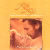

| |
|
|  |
Rob Roy
(1995) |
| |
|
| Tracks: |
1. Overture: Rob Roy/The Rieving Party
2. Home From The Hills
3. Hard Earth
4. Procession For The Ill-Used
5. Blood Sport
6. The Gaelic Reels
7. Ailein Duinn
8. The Last Peaceful Night
9. Troops In The Mist
10. Honor Inflamed
11. The Dispossessed: The Cave/Hard Home On The Moor
12. The Blunt Reels
13. Highland Justice: Call Of The Claymore/Assize Of The Gregorach
14. A Standing Stone, A Silk Purse
15. Theid Mi Dhachaigh (I'll Go Home)
16. Rannoch Moor Suite: Scorched Earth/Rannoch Moor Retreat/The Mists/Rob Come To Hand
17. Morag's Lament
18. Born By Rapids
19. Love And Death Suite: My Beloved/A Matter Of Honor/Cunningham's End
20. Robert And Mary |
| |
| |